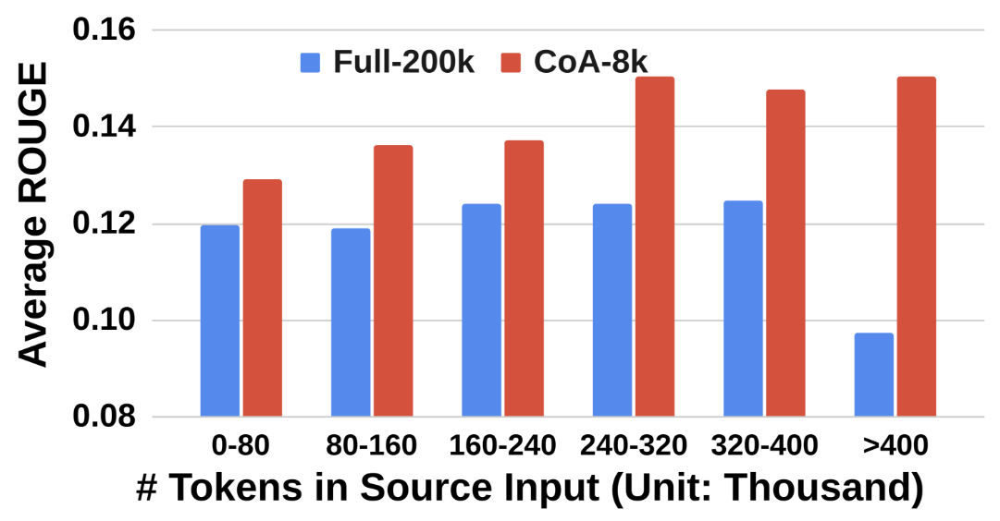

Compare w/ RAG
CoA Improvement is More Obvious When RAG Fails to Retrieve Gold Answer.

Addressing the challenge of effectively processing long contexts has become a critical issue for Large Language Models (LLMs). Two common strategies have emerged: 1) reducing the input length, such as retrieving relevant chunks by Retrieval-Augmented Generation (RAG), and 2) expanding the context window limit of LLMs. However, both strategies have drawbacks: input reduction has no guarantee of covering the part with needed information, while window extension struggles with focusing on the pertinent information for solving the task. To mitigate these limitations, we propose Chain-of-Agents (CoA), a novel framework that harnesses multi-agent collaboration through natural language to enable information aggregation and context reasoning across various LLMs over long-context tasks. CoA consists of multiple worker agents who sequentially communicate to handle different segmented portions of the text, followed by a manager agent who synthesizes these contributions into a coherent final output. CoA processes the entire input by interleaving reading and reasoning, and it mitigates long context focus issues by assigning each agent a short context. We perform comprehensive evaluation of CoA on a wide range of long-context tasks in question answering, summarization, and code completion, demonstrating significant improvements by up to 10% over strong baselines of RAG, Full-Context, and multi-agent LLMs.

CoA Improvement is More Obvious When RAG Fails to Retrieve Gold Answer.
CoA Improvement is More Obvious When Long Context Models Meet Longer Inputs.
We can also animate the scene by interpolating the deformation latent codes of two input frames. Use the slider here to linearly interpolate between the left frame and the right frame.

Start Frame

End Frame
Using Nerfies, you can re-render a video from a novel viewpoint such as a stabilized camera by playing back the training deformations.
There's a lot of excellent work that was introduced around the same time as ours.
Progressive Encoding for Neural Optimization introduces an idea similar to our windowed position encoding for coarse-to-fine optimization.
D-NeRF and NR-NeRF both use deformation fields to model non-rigid scenes.
Some works model videos with a NeRF by directly modulating the density, such as Video-NeRF, NSFF, and DyNeRF
There are probably many more by the time you are reading this. Check out Frank Dellart's survey on recent NeRF papers, and Yen-Chen Lin's curated list of NeRF papers.
@article{park2021nerfies,
author = {Park, Keunhong and Sinha, Utkarsh and Barron, Jonathan T. and Bouaziz, Sofien and Goldman, Dan B and Seitz, Steven M. and Martin-Brualla, Ricardo},
title = {Nerfies: Deformable Neural Radiance Fields},
journal = {ICCV},
year = {2021},
}